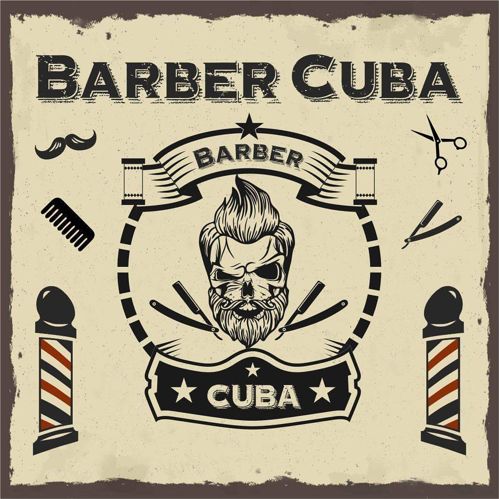

Sobre a Barbearia Cuba
Localizada no coração da cidade a Cuba Barbearia e instrumentos musicais traz para o mercado o que há de melhor para o seu cabelo e barba. A loja e Barbearia Cuba já é destaque na cidade e conquista novos clientes a cada dia.
Nossa missão é: "Proporcionar auto-estima e qualidade de vida aos clientes".
Oferecemos profissionais experientes e antenados às mudanças no mundo da moda. O atendimento possui padrão de excelência e agilidade. Trabalhamos com hora marcada, garantindo qualidade e satisfação dos nossos clientes.
Nosso estabelecimento
Nosso estabelecimento está localizado no coração da cidade Aqui na rua Olávo Bilac n°21
Benefícios
- Atendimento ao cliente
- Espaço diferenciado
- Localização
- Profissionais qualificados